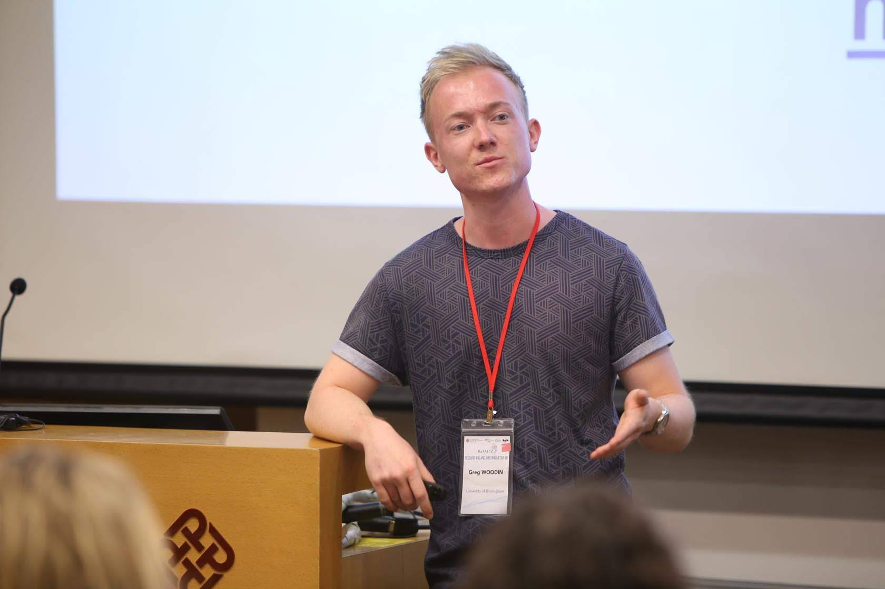

I'm Greg Woodin, an ESRC-funded linguist and cognitive scientist studying for an MA Social Research at the University of Birmingham, UK.
My research focuses on metaphorical thought processes, especially those where there is an association between space and some other domain, such as numerical quantity or emotional valence. I investigate these thought processes experimentally and through corpus studies where I analyse how speakers in the TV News Archive gesture when they use certain metaphors in their speech.
In a more applied context, I look at how spatial metaphors can either aid or impede understanding of different data visualisations, such as bar charts. An overarching theme in my work is the idea that metaphorical thinking involves mental simulation of a metaphor’s source domain, such as space. My PhD research will focus on numerical cognition and how to effectively communicate about numbers.
MA by Research
English Language & Applied Linguistics
University of Birmingham
BA (hons.)
First class degree in English Language.
University of Birmingham
Publications

Woodin, G., Winter, B., Perlman, M., Littlemore, J., Matlock, T.
Metaphoric gestures for numerical quantity and emotional valence in the TV News Archive.
Find out more
Woodin, G. & Winter, B.
Placing abstract concepts in space: quantity, time and emotional valence.
Find out moreAwards
- 2018
- 2017
- 2015
- 2014
Constance Naden Medal
Given to the student who submits the highest quality thesis for the MPhil/MRes/MA by Research degree across the College of Arts and Law.
Awarded ESRC Midlands Graduate School DTP Studentship
Annual payment consists of course fees (£4,260) and a maintenance award (£14,777).
Offered AHRC Midlands3Cities DTP Studentship
£14,777 course fees + £4,260 maintenance award
Highly Commended in Language & Linguistics.
The Undergraduate Awards Programme 2017.
College of Arts & Law Masters MA by Research Scholarship.
English Language and Applied Linguistics at the University of Birmingham, 2017/18. £4,195.
Gwyneth Fox Award.
Awarded to the student with the highest mark overall (80.291) enrolled on the English Language or the English Language and Linguistics single honours programmes. £250.
Vera Adamson Prize
Given to the first year undergraduate deemed to have produced “the most outstanding work in the field of Modern English Language”. £100.
Sonnenschein Prize
Given to “first year students whose performance in their examinations is deemed to be of sufficient merit”. £75.
Notting Hill Editions Essay Prize 2015
Longlisted amongst names such as Hilary Mantel.
Awarded Access to Birmingham (A2B) Scholarship for undergraduate study.
£4500
Unconditional offer for undergraduate study in BA English Language.
University of Birmingham
Conferences
-
airplanemode_activeTALK • LUND UNIVERSITY
The 12th International Symposium on Iconicity in Language and Literature 2019
‘Degrees of metaphoricity: a large-scale, quantitative analysis of iconic gestures in the TV News Archive’
-
trainTALK • UNIVERSITY OF BIRMINGHAM
Birmingham English Language Postgraduate Conference 2019
‘Degrees of metaphoricity: a large-scale, quantitative analysis of gestures in the TV News Archive’
-
trainPOSTER • UNIVERSITY OF OXFORD
The Creative Power of Metaphor 2019
‘Degrees of metaphoricity: a quantitative gesture analysis’
-
airplanemode_activePOSTER • UNIVERSITY OF Tübingen
Spatial Cognition 2018
‘Placing abstract concepts in space: quantity, time and emotional valence’
-
trainPOSTER • UNIVERSITY OF NOTTINGHAM
Figurative Language: Experimental and Corpus-Based Studies 2018
‘Thinking metaphorically: what do figurative language and metaphoric gestures reveal about thought?’
-
airplanemode_activeTALK • Hong Kong Polytechnic University
Researching and Applying Metaphor 2018
‘The continuity of metaphor? Horizontal and vertical metaphors in the spatialization of time, quantity and valence’. Fully funded by School of English, Drama, American and Canadian Studies (£575) and College of Arts & Law Graduate School PG Research Support Fund (£280).
-
trainPOSTER • UNIVERSITY OF BIRMINGHAM
Research Poster Conference 2018
‘Thinking metaphorically: what do language and gesture reveal about thought?’
-
trainTALK • University of Birmingham
Birmingham English Language Postgraduate Conference 2018
‘Metaphors of space: recent developments and new questions in Conceptual Metaphor Theory’
greg_woodin
Catch up with my latest thoughts.
songswithoutmusic
Read my poems.

OSF
View my pre-prints, data & code.